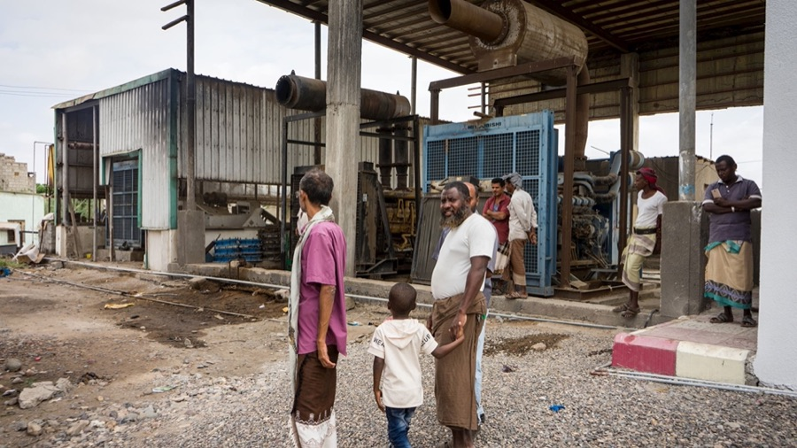
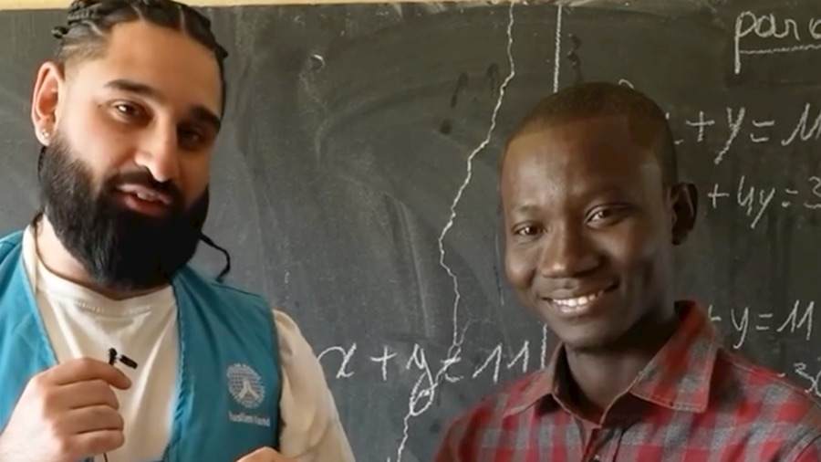
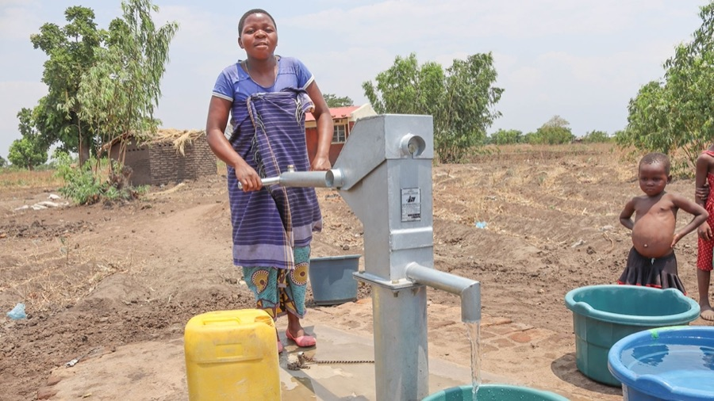
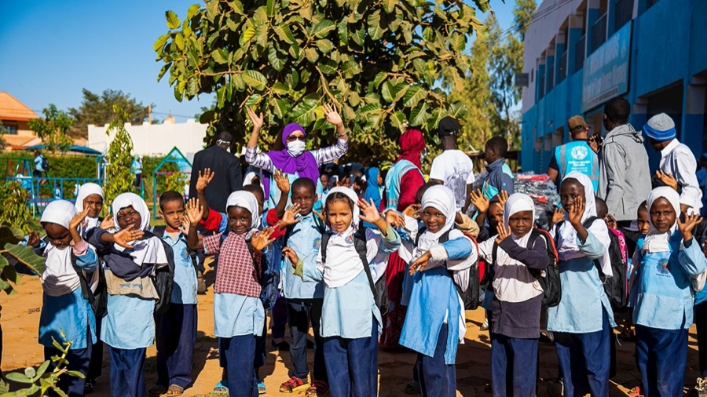
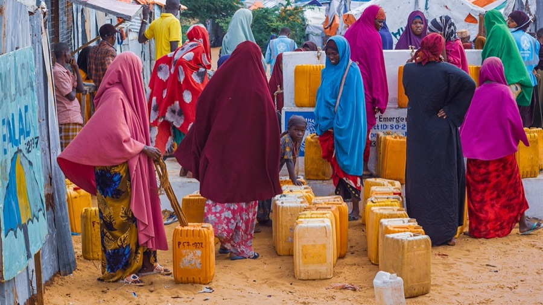

Nisab 2027 : la valeur du jour et comment l'utiliser
Or ou argent, quelle base choisir, et pourquoi la valeur change chaque semaine.

Or ou argent, quelle base choisir, et pourquoi la valeur change chaque semaine.

Avec le Programme alimentaire mondial, de quoi faire du pain pour 20 000 personnes pendant un mois.

Parrainé à 8 ans à Ségou, il enseigne aujourd'hui dans l'école qui l'a accueilli.
Des réponses précises, datées et sourcées, mises à jour chaque année sur la même adresse.


Chaque urgence et chaque campagne saisonnière se termine par un bilan chiffré, publié ici.




Doublement des dons du fonds général par nos entreprises mécènes, de minuit à minuit.
La Fourchette Fraternelle ouvre ses portes pour un dîner partagé avec les convives et les bénévoles.
Dates, zakat al fitr, calcul de la zakat al maal : une soirée de questions-réponses avec nos équipes.
Dans le site final : URL /nos-actualites/{slug} par article, pagination /nos-actualites?page=N avec rel="next", et une page par rubrique.